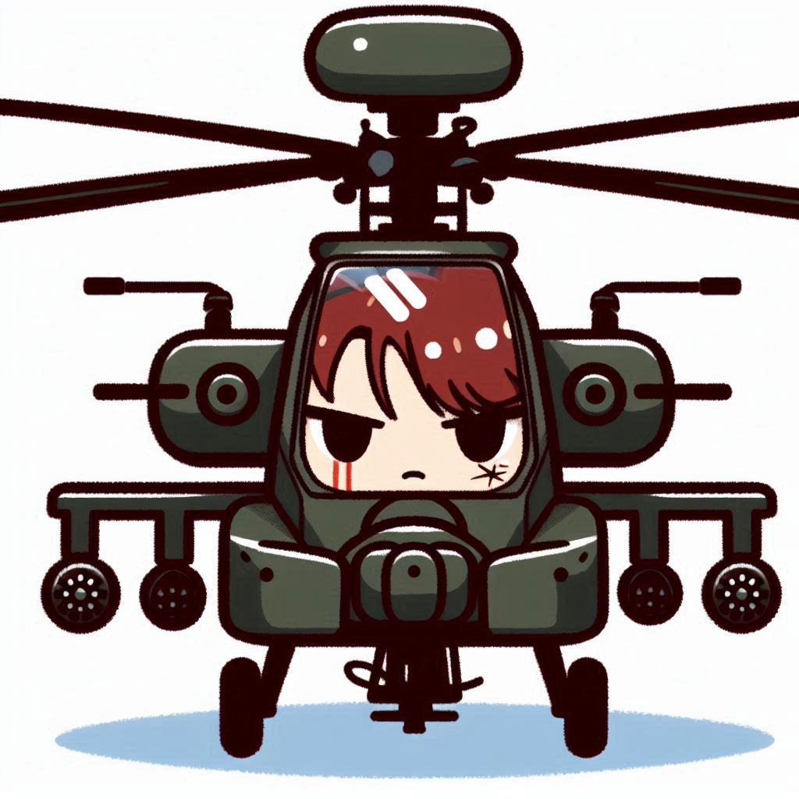
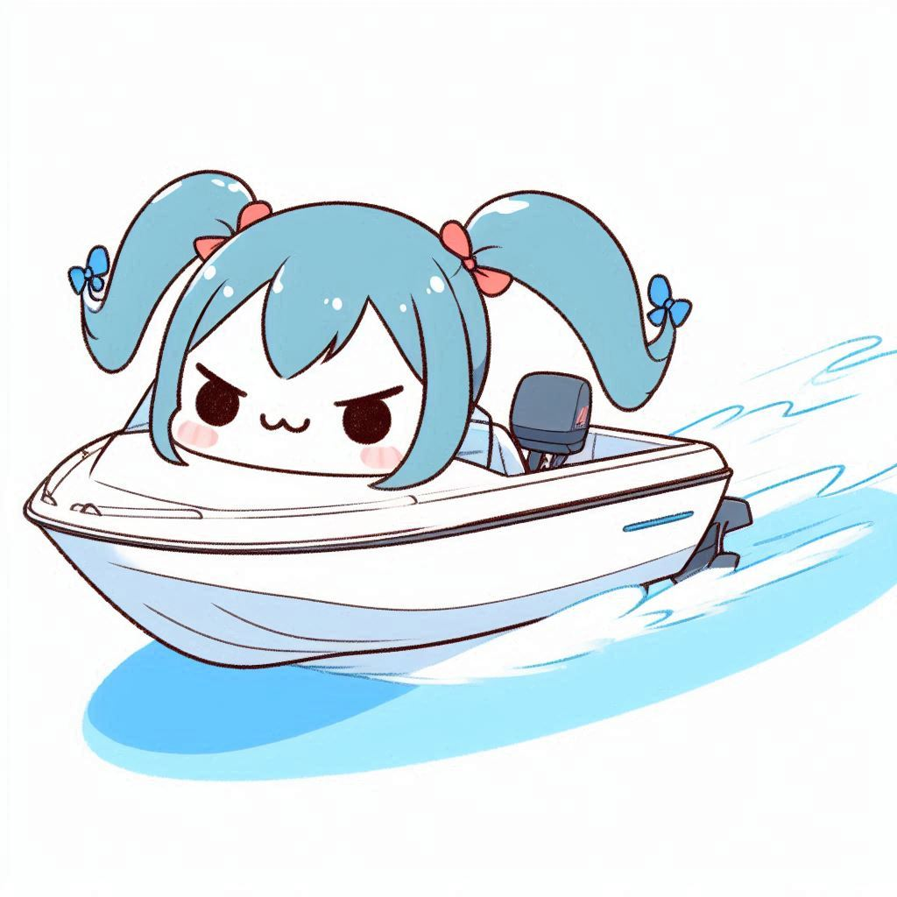
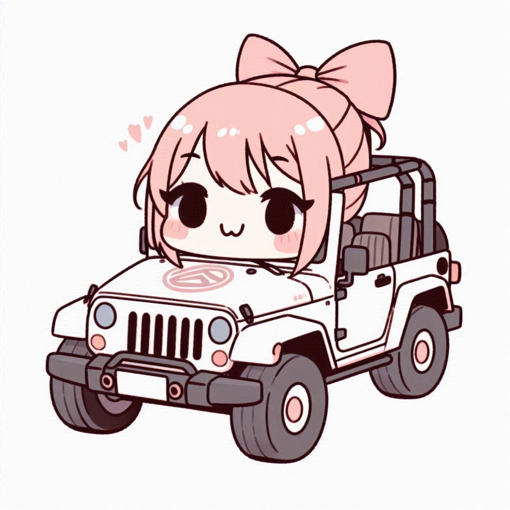
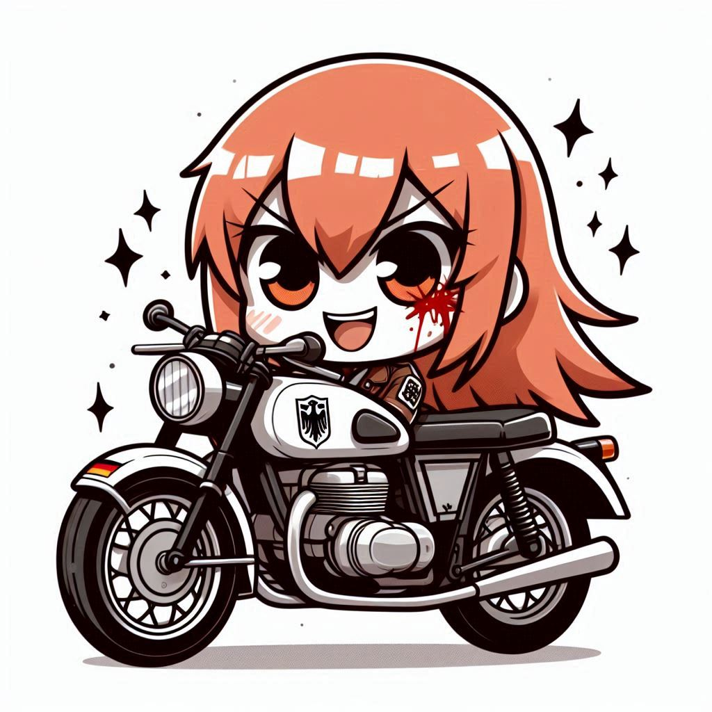

Personajes

Heli-Chan
Helicoptero militar. Personalidad ruda pero se enamora de quien no le teme.

Motorin
Lancha tsundere. Dice "BAKA!" y se enamora cuando tocan su popa.

Gela & Froza
Gemelas refrigeradoras kuudere. Se derriten por el calor humano.

Jeepy
Jeep osananajimi. Amiga de la infancia energetica.

Greta Eisenrad
⚠️ HEROINA SECRETA - Motocicleta ruda que entra a mitad del ciclo. PELIGRO: Yandere obsesiva.
Capitulo: 1 |
Afecto: Neutral
Garage Academy